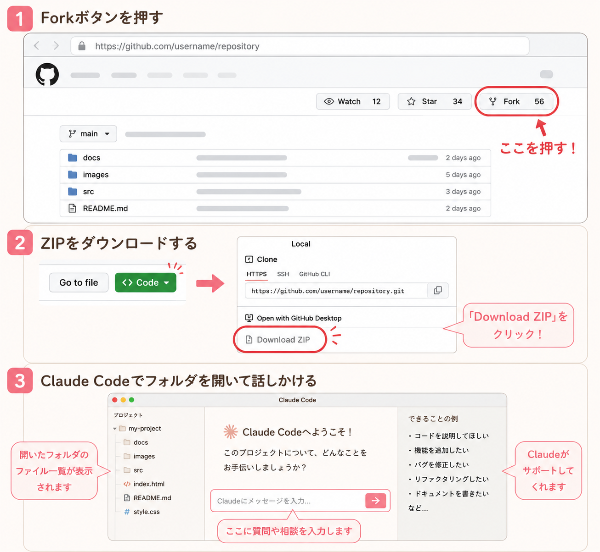

あやさんが作ったサイトをベースに
あなたオリジナルのサイトへ
全体の流れ

STEP（詳しい手順）
あやさんのサイトのデータを、自分のGitHubアカウントにまるごとコピーします。
下のURLをブラウザで開く
右上にある 「Fork」 ボタンをタップ
（スマホの場合は画面を横にしてみると見つけやすいです）
「Create fork」 ボタンをタップして完了
コピーしたデータをパソコンに取り込みます。
STEP1でForkした、あなた自身のリポジトリページに移動する
（URLがあなたのGitHubユーザー名になっていればOK）
緑色の 「Code」 ボタンをタップ
「Download ZIP」 をタップしてダウンロード
ダウンロードされたZIPファイルを解凍（ダブルクリック）してフォルダを取り出す
Claude Codeにフォルダを読み込ませて、カスタマイズを依頼します。
Claude Codeを開く
STEP2で取り出したフォルダを、Claude Codeに指定して開く
（「Open Folder」や「フォルダを選択」から選びます）
下のプロンプト（依頼文）をコピーしてチャット欄に貼り付けて送信する
このままコピーしてClaudeに貼り付けてください。
[ ] の中だけあなたの情報に書き換えてOKです。